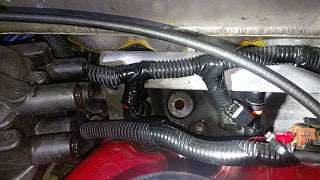

-
Previous threads related to the subject are 100% inaccurate.
It appears to be some shit tier BSPT thread close to 12mm.
I'm trying to hunt down a fan switch that will fit this port
Pic related.
Buddy is coming into town that may have a 89-90 S13 inline AC condenser fan switch and pipe, but i'd like to utilize existing ports.
Removing LIM and drill/tap is not an option (i'm lazy)
Local Fastenal doesnt have a BSPT gauge, but the cute attendant makes up for it
Ideal to keep sensors and plugs Nissan style to keep it OEM appearanceLast edited by 88sinZ; 09-04-2016, 10:12 PM. -
Thanks for saving our bandwidth on the thumbnail sized pic… :P
It's going to be BSPT, same pitch as NPT, but not tapered like NPT. This is going to be 1/4 BSPT
I use a lot of npt fittings at work…and also just verified with the sensor on my AE motor against a 1/4"npt barbed fitting.
Edit: As verified by CAG8OR:
"The threads are Not 1/4BSPT from what I can tell. They are simply M12X1.25. I have both a M12X1.25 bolt and tap and both thread into all four holes on both of my spares. That is two holes left and right side of the LIM on two separate LIM's. I make a point of this because a M12X1.25 to 1/8" NPT adaptor is readily available from Kinugwa Turbo Parts. "
If you ever decide to tap it (just minimal aluminum bits in the coolant stream, will probably settle somewhere), use a M16x1.5 tap
and use a 1991-94 Sentra switch. Referencing this thread:
https://z31performance.com/forum/z31…-switch-to-use
I did this and put it in a inline hose bung (which i had to tap) and so far it works fine, and has a OEM plug. Had i planned ahead, i would have put it in the LIM.
Last edited by Z_Karma; 09-14-2016, 09:27 AM. Reason: updated info for accuracy
84 AE/Shiro #683/Shiro #820/84 Turbo -
ive wiped threads trying to teflon in BSPT to NPT, not going that route again.
Not trying to crud up and new radiator by drilling stuff.
I was previously referencing the fan switch circuit at the Z31 OEM AC condenser fan switch (lower driver side radiator) and the local tuner even mentioned it's running too dang hot like NissanEgg (RIP) said its a poor choice location, it gets +90C *CHTS signal Nistune Consult* before the switch activates.
Local 240sx dude is coming back this weekend and says he's pretty sure he has the inline pipe and switch, so i just need to source a connector to keep it original looking.
I'm ticked off by the false information allowed on this forum, but it's dead as is
still glad to see you around and responsive!Last edited by 88sinZ; 09-05-2016, 12:57 AM. -
Well, i just gobbed some thread lock and cross threaded the F out of it with a 1/4 MIP to 1/8 NPT female Home depot special.
-
I posted a picture labelled incorrectly in one of those old threads and have taken it down now. I too found out that some of the old "knowledgeable" guys were completely wrong..
I actually found out that not only was their sensor too big for my broken LIM that had the stock sensor, but my replacement LIM with a plug in it had an even smaller thread size, same as the temp gauge sensor.(1/8" BSPT ?)
If you use a temperature switch to control the fan, I would attempt to test it first because some of the manufacturers list different opening and closing temperatures for the same applications, plus they have a huge +/- tolerance. Also I know it's too late for you, but the stock one wire is supposed to close around 212°F (FSM) but many of the aftermarket replacements are 190°F for future reference.Last edited by PegCityZ; 09-06-2016, 10:14 PM. -
I considered the injector fan switch, but due to circuitry differences it was incompatible.
Dude where you been?? Any thing new?

Copyright © 2006–. All rights reserved. Privacy Policy